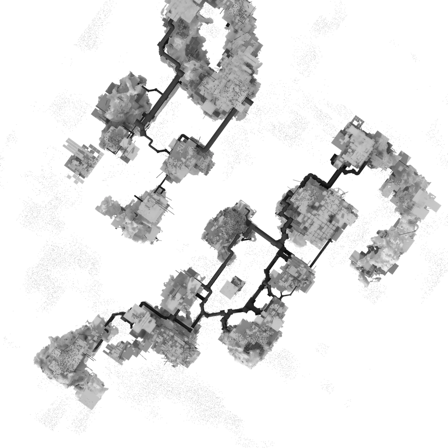

황금못은 끝내 찾지 못했다. 그래도 우리는 인류세 안에 있다.
In 2024 the golden spike was voted down, 4 to 12. “We are in the Anthropocene, irrespective of a line on the time scale.” The gap between the concept and its record is where this work begins.
몸이 아니라 행동이 남는다.
A trace fossil keeps not the body but what it did — footprints, burrows, nests. The unit of the record is not the subject but the act.
인간이 가장 오래, 가장 촘촘히 반복한 행동 — 모여 살기.
Humanity's trace fossil is dense habitation: concrete foundations, compacted paths, and the pipes laid beneath them.
머물면 — 콘크리트가 선다
걸으면 — 길이 다져진다
덮으면 — 배관이 묻힌다
떠나면 — 풀이 돌아온다
This world has no “build” button. Every structure is a byproduct of staying and walking. Twenty seconds of real time becomes one stratum.
전체는 끝내 보이지 않는다.
The Anthropocene is a hyperobject: no one perceives it whole. So no one here is given the overview — limited sight, a limited life.
이름은 멜로디다. 곁에 머물면 화음이 되고, 그 자리에 콘크리트가 선다.
Overlap without occlusion. For the one person it is a musical moment; for the whole it is one cell of a structure.
기록은 남습니다. 흔적은 읽힐 수도, 읽히지 않을 수도 있습니다.
The record remains. Your traces may be read — or may not be.
현재의 당신은 무엇을 남기시겠습니까?
